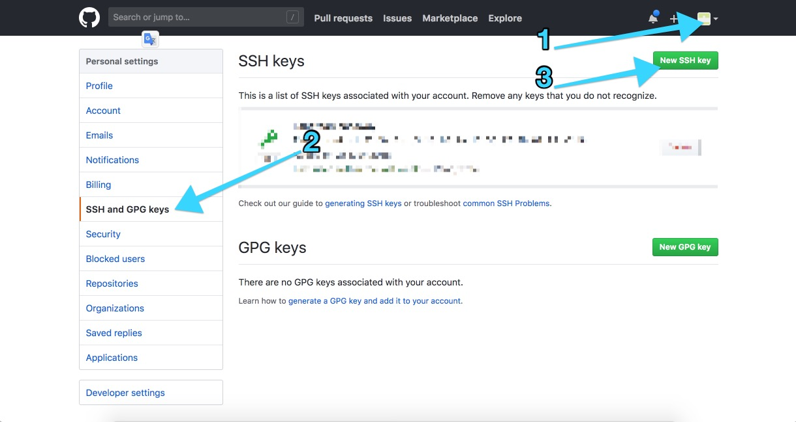

<!DOCTYPE html>
<html lang="en">
    <head>
        <meta charset="utf-8">
        <meta http-equiv="X-UA-Compatible" content="IE=edge">
        <meta name="viewport" content="width=device-width, initial-scale=1.0">
        
        
        
        <link rel="shortcut icon" href="../../img/favicon.ico">
        <title>使用Mkdocs、Github搭建博客 - 40+ Codeing for life！</title>
        <link href="../../css/bootstrap-custom.min.css" rel="stylesheet">
        <link href="../../css/font-awesome-4.5.0.css" rel="stylesheet">
        <link href="../../css/base.css" rel="stylesheet">
        <link rel="stylesheet" href="../../css/highlight.css">
        <!-- HTML5 shim and Respond.js IE8 support of HTML5 elements and media queries -->
        <!--[if lt IE 9]>
            <script src="https://oss.maxcdn.com/libs/html5shiv/3.7.0/html5shiv.js"></script>
            <script src="https://oss.maxcdn.com/libs/respond.js/1.3.0/respond.min.js"></script>
        <![endif]-->

        <script src="../../js/jquery-1.10.2.min.js"></script>
        <script src="../../js/bootstrap-3.0.3.min.js"></script>
        <script src="../../js/highlight.pack.js"></script>
        <script>
            (function(i,s,o,g,r,a,m){i['GoogleAnalyticsObject']=r;i[r]=i[r]||function(){
            (i[r].q=i[r].q||[]).push(arguments)},i[r].l=1*new Date();a=s.createElement(o),
            m=s.getElementsByTagName(o)[0];a.async=1;a.src=g;m.parentNode.insertBefore(a,m)
            })(window,document,'script','//www.google-analytics.com/analytics.js','ga');

            ga('create', 'UA-119900391-1', 'UA-119900391-1');
            ga('send', 'pageview');
        </script> 
    </head>

    <body>

        <div class="navbar navbar-default navbar-fixed-top" role="navigation">
    <div class="container">

        <!-- Collapsed navigation -->
        <div class="navbar-header">
            <!-- Expander button -->
            <button type="button" class="navbar-toggle" data-toggle="collapse" data-target=".navbar-collapse">
                <span class="sr-only">Toggle navigation</span>
                <span class="icon-bar"></span>
                <span class="icon-bar"></span>
                <span class="icon-bar"></span>
            </button>
            <a class="navbar-brand" href="../..">40+ Codeing for life！</a>
        </div>

        <!-- Expanded navigation -->
        <div class="navbar-collapse collapse">
                <!-- Main navigation -->
                <ul class="nav navbar-nav">
                    <li >
                        <a href="../..">Welcome</a>
                    </li>
                    <li class="dropdown">
                        <a href="#" class="dropdown-toggle" data-toggle="dropdown">Python学习 <b class="caret"></b></a>
                        <ul class="dropdown-menu">
                            
<li >
    <a href="../../Python学习/Python常用配置/">Python常用配置</a>
</li>
                        </ul>
                    </li>
                    <li class="dropdown active">
                        <a href="#" class="dropdown-toggle" data-toggle="dropdown">系统配置 <b class="caret"></b></a>
                        <ul class="dropdown-menu">
                            
<li >
    <a href="../Docker简单入门，创建Python、Mysql开发环境/">Docker简单入门，创建Python、Mysql开发环境</a>
</li>
                            
<li >
    <a href="../Mac系统配置/">Mac系统配置</a>
</li>
                            
<li >
    <a href="../TA-Lib安装/">TA Lib安装</a>
</li>
                            
<li >
    <a href="../Ubuntu系统配置(虚拟机)/">Ubuntu系统配置(虚拟机)</a>
</li>
                            
<li class="active">
    <a href="./">使用Mkdocs、Github搭建博客</a>
</li>
                        </ul>
                    </li>
                    <li class="dropdown">
                        <a href="#" class="dropdown-toggle" data-toggle="dropdown">量化交易 <b class="caret"></b></a>
                        <ul class="dropdown-menu">
                            
<li >
    <a href="../../量化交易/策略学习-Bollinger Awesome Alert R1/">策略学习 Bollinger Awesome Alert R1</a>
</li>
                        </ul>
                    </li>
                </ul>

            <ul class="nav navbar-nav navbar-right">
                <li>
                    <a href="#" data-toggle="modal" data-target="#mkdocs_search_modal">
                        <i class="fa fa-search"></i> Search
                    </a>
                </li>
                    <li >
                        <a rel="next" href="../Ubuntu系统配置(虚拟机)/">
                            <i class="fa fa-arrow-left"></i> Previous
                        </a>
                    </li>
                    <li >
                        <a rel="prev" href="../../量化交易/策略学习-Bollinger Awesome Alert R1/">
                            Next <i class="fa fa-arrow-right"></i>
                        </a>
                    </li>
                    <li>
                        <a href="https://github.com/blob/master/系统配置/使用Mkdocs、Github搭建博客.md"><i class="fa fa-github"></i> Edit on GitHub</a>
                    </li>
            </ul>
        </div>
    </div>
</div>

        <div class="container">
                <div class="col-md-3"><div class="bs-sidebar hidden-print affix well" role="complementary">
    <ul class="nav bs-sidenav">
        <li class="main active"><a href="#mkdocsgithub">使用Mkdocs、Github搭建博客</a></li>
            <li><a href="#1">1. 摘要及参考资料</a></li>
            <li><a href="#2">2. 目的</a></li>
            <li><a href="#3-mkdocs">3. 静态文档（页面）生成器Mkdocs的安装、配置和使用</a></li>
            <li><a href="#4-mkdocs">4. 安装Mkdocs</a></li>
            <li><a href="#5-mkdocstheme">5. Mkdocs配置文件以及主题（theme）的配置</a></li>
            <li><a href="#6-github">6. Github设置</a></li>
            <li><a href="#7-git">7. 本地Git的基本设置</a></li>
            <li><a href="#8-gitgithub-page">8. 通过Git向Github page提交博客页面</a></li>
    </ul>
</div></div>
                <div class="col-md-9" role="main">

<h2 id="mkdocsgithub">使用Mkdocs、Github搭建博客</h2>
<p><strong>更新时间：20180525</strong></p>
<p><br /></p>
<h4 id="1">1. 摘要及参考资料</h4>
<p>这篇博客只是我个人记录使用MMkdocs、Git和Github搭建博客的经历和心得。这个过程中，我仅仅使用了Mkdocs、Git和Github中部分必要的和初级的命令。更加详细、高级的Mkdocs、Git和Github配置、使用方法，需要根据个人实际需求情况，查阅后附的参考资料内容。</p>
<p><strong>个人简单的使用经验，Mkdocs更适合用于创建使用手册类的说明文档，而不是博客。默认的模版，都是这个思路，因为Mkdocs现有官方和第三方模版对导航的设置，就是展示一个说明手册的思路。要把Mkdocs当作博客来使用，而且后期会更新大量内容，必须自己手动创建或调整模版的内容导航</strong></p>
<ul>
<li>
<p>本文阐述的方法、命令，正常执行所依赖的环境以及Mkdocs版本：</p>
<ul>
<li>Ubuntu server 16.04.4</li>
<li>Python 3.5.2</li>
<li>mkdocs 0.17.3</li>
</ul>
</li>
<li>
<p>参考资料</p>
<ul>
<li>参考资料一<a href="https://my.oschina.net/ryaneLee/blog/638440">小白独立搭建博客--Github Pages和Hexo简明教程</a></li>
<li>参考资料二<a href="https://www.jianshu.com/p/6fdb19aa4558">手把手教你用github pages搭建博客 最新版</a></li>
<li>参考资料三<a href="http://git.oschina.net/progit/">Pro Git（中文版）</a></li>
<li>
<p>参考资料四<a href="https://markdown-docs-zh.readthedocs.io/zh_CN/latest/">MkDocs 中文文档</a></p>
<p>这个中文文档的版本稍老，但还是可以作为使用指南，实际配置mkdocs时如果遇到错误提示，可以根据错误提示以及使用的命令去查阅最新的英文手册。
    - <a href="https://www.mkdocs.org/">MkDocs 英文官方文档</a></p>
</li>
</ul>
</li>
</ul>
<p><br /></p>
<h4 id="2">2. 目的</h4>
<p>使用Github架设一个自己的学习笔记博客，并实现如下几个目的：</p>
<ol>
<li>希望通过这种方式，能够推动自己更积极的把学习过程记录下来；</li>
<li>便于多平台访问自己的笔记内容；</li>
<li>通过这个过程，学习一下git的简单使用。</li>
</ol>
<p><br /></p>
<h4 id="3-mkdocs">3. 静态文档（页面）生成器Mkdocs的安装、配置和使用</h4>
<h4 id="4-mkdocs">4. 安装Mkdocs</h4>
<pre><code class="linux">pip3 install mkdocs --user
</code></pre>

<h4 id="5-mkdocstheme">5. Mkdocs配置文件以及主题（theme）的配置</h4>
<ul>
<li>
<p>mkdocs的核心逻辑</p>
<p>mkdocs可以将本地编辑的文件（主要是markdown格式的文件），与个人喜欢的主题（theme），自动、批量的编译成网页文件。基于这个逻辑，首先需要在本地使用mkdocs创建一个站点（mysite），用于存放Mkdocs编译所需的配置文件、需要编辑的md文件和模版文件，然后编写或将我们已有的md文件拷贝到本地'mysite'目录下的'docs'目录内，最后使用Mkdocs进行编译，生成符合我们希望的网站结构和相应的网页文件。</p>
</li>
<li>
<p>mkdocs创建新站点，在你喜欢的任何目录下，输入后面的命令，创建一个名字叫'mysite'的目录，这个目录用于Mkdocs存放待编译的配置、md和模版文件，具体命令如下：</p>
</li>
</ul>
<pre><code class="linux">mkdocs new mysite 
# 'mysite'只是一个目录名，你可以换成任何你喜欢的名字，例如mydog
# 如果运行成功，在当下目录内，你应该可以看到一个新建的、名字叫'mysite'的目录。进入这个目录，里面会有一个文件'mkdocs.yml'，以及一个名叫'docs'的目录
</code></pre>

<ul>
<li>运行本地的Mkdocs测试服务。进入刚才新建的'mysite'目录，并输入如下命令：</li>
</ul>
<pre><code class="linux">mkdocs serve 
# 上面的命令，会运行一个本地的mkdocs测试服务器，默认的服务器访问地址是'127.0.0.1:8000'
mkdocs serve --dev-addr=ip:port
# 通过'--dev-addr'命令，可以指定ip和访问端口，例如，Mkdocs服务运行在虚拟机内，如果希望通过主机上的浏览器来访问虚拟机内的Mkdocs测试服务器，就要使用这个参数，指定虚拟机的ip
</code></pre>

<ul>
<li>配置主题<ul>
<li>Mkdocs的主题不是很多，官方提供了2个主题，官方认可的<a href="https://github.com/mkdocs/mkdocs/wiki/MkDocs-Themes">第三方主题</a>有大概12个。这些主题，结构上基本都一样，配色算是最大的区别；</li>
<li>我选择了<a href="http://mkdocs.github.io/mkdocs-bootswatch/">Bootswatch</a>主题，Bootstrap还有12种配色可选；</li>
<li>Mkdocs的主题，都有2种安装方式，一种通过pip来安装主题，例如：<code>pip install mkdocs-bootswatch</code>，然后在'mkdocs.yml'内设置主题<code>theme: simplex</code>；另外一种是在主题的Github页面，下载主题，然后解压主题文件目录，让后将主题目录放在你建立的本地'site'目录下，然后编辑mkdocs.yml文件，添加主题配置项<code>theme_dir: simplex</code>来指定希望使用的主题；</li>
<li>使用[定制主题]。通过这种方式，可以使用自己设计的主题，或更加规范的对所选的第三方主题进行调整。(https://www.mkdocs.org/user-guide/configuration/#theme)：</li>
</ul>
</li>
</ul>
<pre><code class="yml">theme:
    name: mkdocs
    custom_dir: my_theme_customizations/
    static_templates:
        - sitemap.html
    include_sidebar: false
</code></pre>

<ul>
<li>
<p>添加网页（md文件）</p>
<ul>
<li>在Mkdocs里，一篇博客或是一个网页，就是'docs'目录下的一个md文件，我使用中文文件名，文件名后缀是Markdown编辑器默认的'.md'；</li>
<li>安装并且配置完毕主题后，下一步就是添加博客的文章了。Mkdocs添加文章很简单，把编写好的'.md'文件，直接拷贝到'site'目录下的'docs'目录里面，就OK了；</li>
<li>我第一次使用时，有个很让我疑惑的问题——如何创建分类或是栏目，来存放不同类别的文章呢？Mkdocs用了超级简单的方法——目录，对了，就是在'docs'目录下创建子目录，每个子目录就类似传统网站的一个分类或栏目，然后把属于这个分类的文章（md文件），拷贝到这个目录下就可以了。</li>
<li><strong>个人经验，让Mkdocs自动根据目录结构及内容去自动生成导航栏。不建议按照官方手册内<a href="https://www.mkdocs.org/user-guide/writing-your-docs/#configure-pages-and-navigation">Configure Pages and Navigation</a></strong></li>
</ul>
</li>
<li>
<p>生成网站（html）</p>
<ul>
<li>通过上面的操作，我们已经在本地创建了一个测试站，但是如果要将浏览器内看到的本地测试网站的内容，发布到Github Page等第三方或我们自建的服务器上，还需要使用如下命令（在'mysite'目录下运行后面的命令），让Mkdocs批量将本地的md文件生成为html文件</li>
</ul>
</li>
</ul>
<pre><code class="linux">mkdocs build
</code></pre>

<ul>
<li>
<ul>
<li>运行上面的命令后，Mkdocs会在'mysite'站点目录下（前面使用'mkdocs new mysite'建立的本地站点目录），生成一个名叫'site'的目录，用于存放自动生成的博客html文件；</li>
</ul>
</li>
<li>
<ul>
<li><strong>Mkdocs会自动扫描'docs'目录下的所有内容，所有能够识别的文件会自动被编译为对应名称的html文件，该目录下的子目录会被编译为分类，目录名就是分类名，文件和目录都可以使用中文进行命名</strong></li>
</ul>
</li>
</ul>
<p><br /></p>
<h4 id="6-github">6. Github设置</h4>
<ul>
<li>登陆<a href="https://github.com/">Github</a>，没有账号的话需要注册一个；</li>
<li>创建'Repository'，并设置访问的网址。'Repository'就是未来存放博客的一个'仓库'。注册并登陆账号后，在首页点'Start a project'，进入'Create a new repository'页面，在'Repository name'栏目填写<code>用户名.github.io</code>，例如，你的github用户名是'jackma'，那么你填写的内容就应该是<code>jackma.github.io</code>，这是一个访问你Github page页面的网址，以后访问你的博客，就是用这个网址。你可能会想，我能随意填写内容么？呃，不能，至少在我摸索的过程中，我填写其它名称后，通过浏览器访问，会出现404错误。</li>
</ul>
<p><br /></p>
<h4 id="7-git">7. 本地Git的基本设置</h4>
<ul>
<li>首先确认你的系统安装了Git，如果没有，Google一下如何安装，很简单的；</li>
<li>安装后，需要设置本地Git访问github时的身份；</li>
</ul>
<pre><code class="linux">git config --global user.name &quot;YOUR NAME&quot;
git config --global user.email &quot;YOUR EMAIL ADDRESS&quot;
</code></pre>

<ul>
<li>设置完毕后，可以使用命令<code>git config --list</code>检查是否设置成功。<code>git config</code>还有很多配置选项，具体的请查阅「参考资料二」</li>
<li>生成并添加SSH key，生成key的命令<code>ssh-keygen -t rsa -C "your_email@youremail.com"</code>，输入命令后，会在当前用户的根目录下生成一个隐藏目录'.ssh'，并在里面创建一个储存'key'的文件'id_rsa.pub'，这个'.pub'存储的是公钥，私钥存储在'id_rsa'文件内，这个文件没有文件后缀。过程中，会询问'.pub'存放的位置，直接输入回车选择默认位置即可，然后，会要求输入一个密码，可以直接回车不设置密码，但是为了安全考虑，还是建议设置一个密码；</li>
<li>用VS code等工具打开这个'.pub'文件，然后复制里面的内容，打开浏览器访问Github并登陆你的账户，然后按下面图片里标注的1、2、3的顺序，进入你的Github账户设置（settings）内'SSH and GPG keys'设置页面，并选择添加一个新的访问Key（New SSH key）</li>
</ul>
<p></p>
<ul>
<li>进入'SSH keys / Add new'页面后，在'Title'输入框内随便填写一个标题，'Key'输入框内把刚才在'id_rsa.pub'文件内复制出来的内容黏贴进去，最后点'Add SSH key'；</li>
<li>在本地终端内输入命令<code>ssh -T git@github.com</code>，看到提示<code>Are you sure you want to continue connecting (yes/no)?</code>后，输入'yes'即可，如果在前面使用'ssh-keygen'生成公钥时设置了密码，这里还会要求输入之前设置的密码；</li>
<li>'ssh-keygen'生成公钥时，设置了密码，固然更加安全，但是每次'git push'时都会提示输入密码，有点麻烦，这时可以使用ssh-agent来管理密钥<blockquote>
<p>ssh-agent是一种控制用来保存公钥身份验证所使用的私钥的程序，其实ssh-agent就是一个密钥管理器，运行ssh-agent以后，使用ssh-add将私钥交给ssh-agent保管，其他程序需要身份验证的时候可以将验证申请交给ssh-agent来完成整个认证过程。</p>
</blockquote>
</li>
</ul>
<pre><code class="linux">ssh-add ~/.ssh/id_rsa
# 我使用的是mac系统，~/.ssh/是指当前用户根目录下的'.ssh'目录，将这个目录里的'id_rsa'存储私钥的文件，使用ssh-add命令，交给ssh-agent进行管理
# 运行该命令后，以后在系统内，使用'git push'时，无论是在终端还是在VScode等编辑器内，都不会再提示输入密码
</code></pre>

<p><br /></p>
<h4 id="8-gitgithub-page">8. 通过Git向Github page提交博客页面</h4>
<ul>
<li>经过前面的步骤，现在可以把Mkdocs生成的html文件，通过Git提交到你的仓库了。首先要进入使用'mkdocs build'后构建的'site'目录，请注意，务必要在'site'目录内执行如下命令，命令如下：</li>
</ul>
<pre><code class="linux"># 'git init'命令对当前所在目录进行初始化，Git以后会对该目录下的文件进行版本控制
git init
# 将当前目录内的所有（.）更改或者新增的文件加入到Git的索引中，加入到Git的索引中就表示记入了版本历史中
git add .
# 提交当前工作空间的修改内容，'-m'参数以及后面引号内的内容，是对这次修改进行注释
git commit -m &quot;update&quot;
# 添加远程仓库，这步只需要在第一次执行一回，以后再提交博客的更新，这步不需要执行
git remote add origin git@github.com:用户名/用户名.github.io.git
# 将本次所有的更新，推送到远程仓库
git push -u origin master
</code></pre>

<ul>
<li>OK，打开浏览器，然后输入Github page地址，也就是前面在Github创建仓库（Repository）时设置的访问地址'用户名.github.io'，WoW，应该已经看到你的博客了！</li>
</ul></div>
        </div>

        <footer class="col-md-12">
            <hr>
            <p>Documentation built with <a href="http://www.mkdocs.org/">MkDocs</a>.</p>
        </footer>
        <script>var base_url = '../..';</script>
        <script src="../../js/base.js"></script>
        <script src="../../search/require.js"></script>
        <script src="../../search/search.js"></script>

        <div class="modal" id="mkdocs_search_modal" tabindex="-1" role="dialog" aria-labelledby="Search Modal" aria-hidden="true">
    <div class="modal-dialog">
        <div class="modal-content">
            <div class="modal-header">
                <button type="button" class="close" data-dismiss="modal"><span aria-hidden="true">&times;</span><span class="sr-only">Close</span></button>
                <h4 class="modal-title" id="exampleModalLabel">Search</h4>
            </div>
            <div class="modal-body">
                <p>
                    From here you can search these documents. Enter
                    your search terms below.
                </p>
                <form role="form">
                    <div class="form-group">
                        <input type="text" class="form-control" placeholder="Search..." id="mkdocs-search-query">
                    </div>
                </form>
                <div id="mkdocs-search-results"></div>
            </div>
            <div class="modal-footer">
            </div>
        </div>
    </div>
</div><div class="modal" id="mkdocs_keyboard_modal" tabindex="-1" role="dialog" aria-labelledby="Keyboard Shortcuts Modal" aria-hidden="true">
    <div class="modal-dialog">
        <div class="modal-content">
            <div class="modal-header">
                <button type="button" class="close" data-dismiss="modal"><span aria-hidden="true">&times;</span><span class="sr-only">Close</span></button>
                <h4 class="modal-title" id="exampleModalLabel">Keyboard Shortcuts</h4>
            </div>
            <div class="modal-body">
              <table class="table">
                <thead>
                  <tr>
                    <th style="width: 20%;">Keys</th>
                    <th>Action</th>
                  </tr>
                </thead>
                <tbody>
                  <tr>
                    <td><kbd>?</kbd></td>
                    <td>Open this help</td>
                  </tr>
                  <tr>
                    <td><kbd>&larr;</kbd></td>
                    <td>Previous page</td>
                  </tr>
                  <tr>
                    <td><kbd>&rarr;</kbd></td>
                    <td>Next page</td>
                  </tr>
                  <tr>
                    <td><kbd>s</kbd></td>
                    <td>Search</td>
                  </tr>
                </tbody>
              </table>
            </div>
            <div class="modal-footer">
            </div>
        </div>
    </div>
</div>


    </body>
</html>
